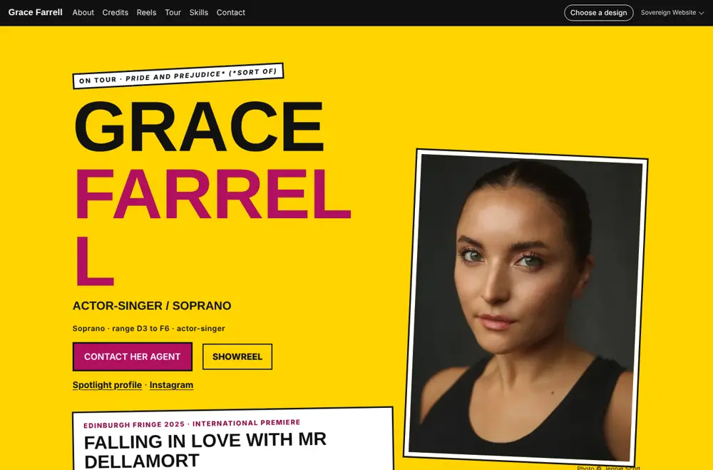
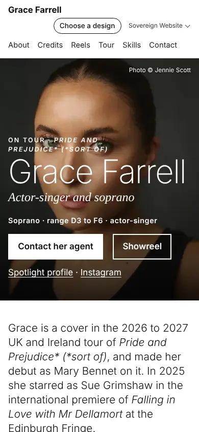
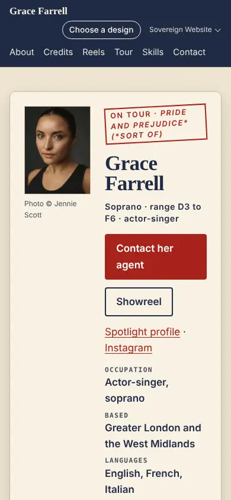

Synthetic users: Grace Farrell, round 2
Site: 1611e49 (v0.1.4); the home page is design 2, Fringe flyer. Run: 21 November 2026, about 01:10 UTC, by design.b.rounds. Look score: 2.8 (3, 3, 2, 3, 3), up from 2.4. Best design votes: 5, 5, 2, 5, 4, so Editorial leads. Nobody said "wow". The review.
Method: Synthetic users. One agent played all five personas, in its own folder. It was given the visible text, so two of its findings were checked against the accessibility tree and did not hold for screen readers: the map numbers are hidden, and no heading is read twice. The doubled kicker and heading is still seen twice. These are simulations, and never replace the measured checks or a real person.
| Persona | Look | Best | Weakest | The one change |
|---|---|---|---|---|
| Phone visitor | 3 | 5 | 4 | the site's own controls take the top 113 px |
| Casting director | 3 | 5 | 4 | "Label the reels clearly and put her face on them" |
| Low-vision reader | 2 | 2 | 3 | the thin and small-capital type; tilted cards when zoomed |
| Design critic | 3 | 5 | 4 | "Rebuild everything below the hero for each design" |
| Theatre-goer | 3 | 4 | 3 | "Highlight 'next venue'", without implying she is on |
Agreed by three or more
- Design 4, the Tour diary, is the weakest (three).
- The reels confuse: extra stills share one caption (three).
- The map's route lines read as a tangle on screen (three).
- Design 5's full-bleed cover makes the strongest first impression (three).



The headshot in these screenshots: photo © Jennie Scott, as credited on Grace's site.